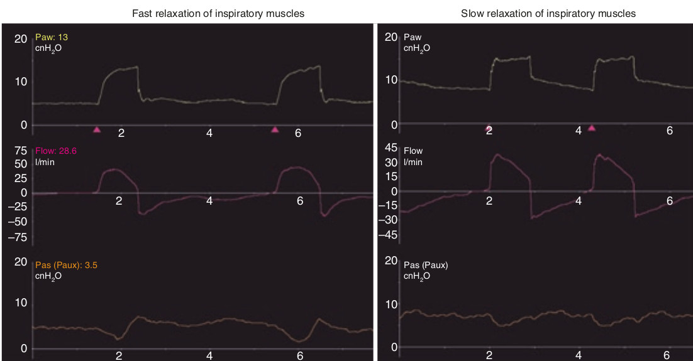

لحظه استراحت دمی وقتی است که PES به خط پایه بازگردد. این حالت ممکن است طی افزایشی سریع ممکن است روی دهد و یا به آهستگی انجام گردد. در اکثر موارد، صعود فشار بسوی خط پایه ابتدا سریع است و سپس آهسته تر میشود.

تمام موارد زیر صحیح است بجز یک مورد. لحظه استراحت عضلات دمی:
۱ - از روی صعود PES بسوی خط پایه معلوم میشود
۲ - شکل آن در تمام بیماران یکسان است
۳ - در هر بیمار از یک نفس به نقس دیگر ممکن است تغییر کند
۴ - با یک افزایش سریع PES و سپس افزایش تدریجی مشخص میشود
۵ - در صورت رویداد تلاش بازدمی فعال دچار تغییر میشود